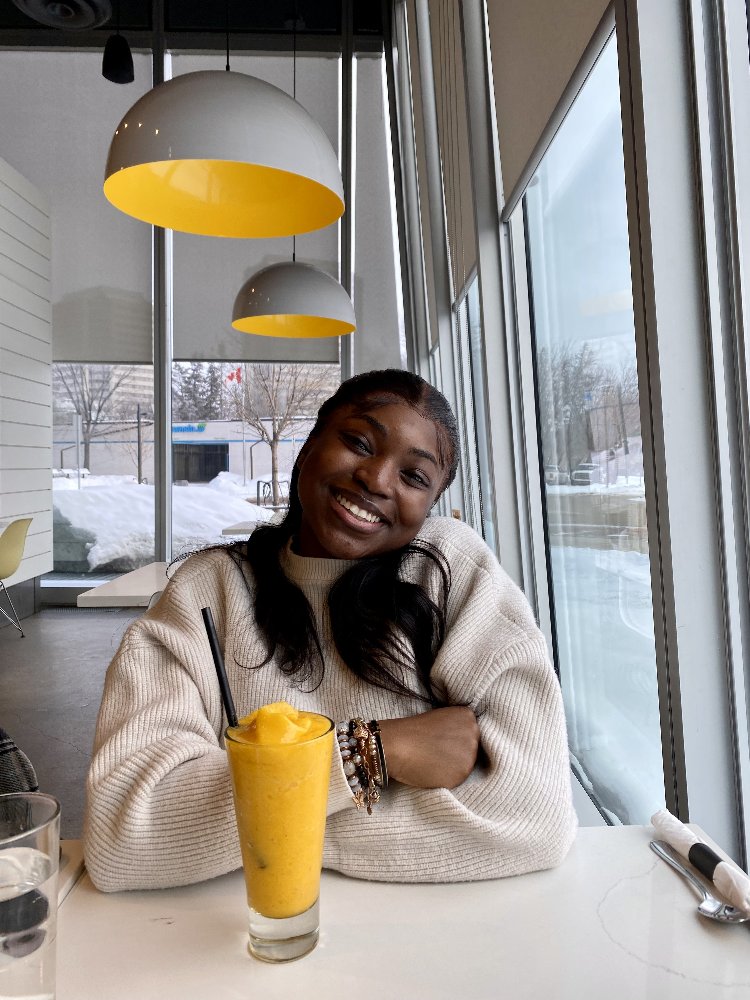

About Esther
My name is Esther Adedapo, I am a Computer Science student at the University of Saskatchewan with a passion for creating beautiful, functional websites. I love how coding allows me to blend creativity with problem-solving.
When I'm not studying or working on projects, you can find me singing or watching a TV show. My goal is to become a front end developer while continuing to learn and grow as a developer.
Quick Facts
- Location: Saskatoon, Canada
- Education: University of Saskatchewan
- Major: Interactive Systems Designs
- Interests: Web Dev, Singing, Watching TV shows